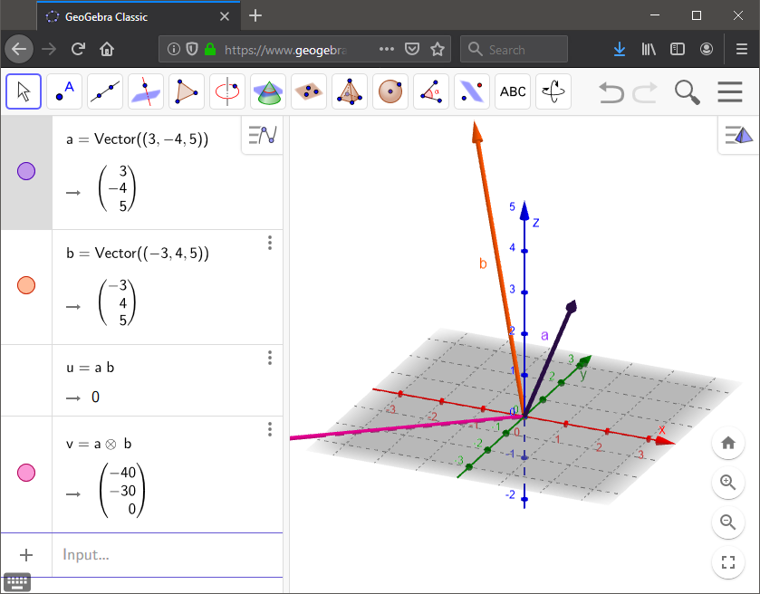
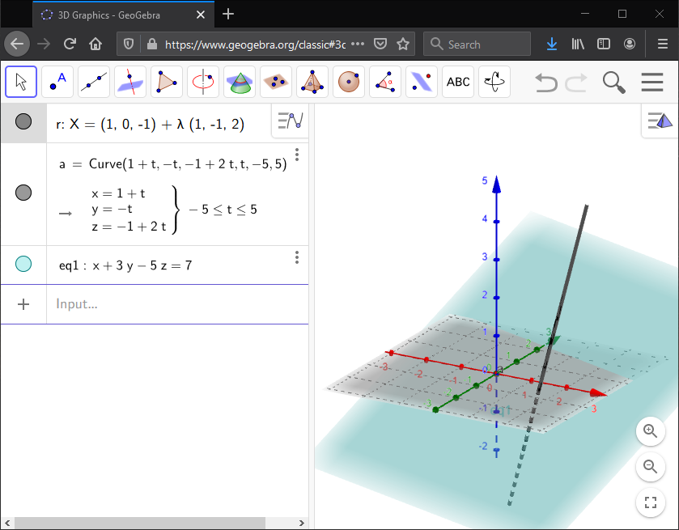

On this page, you will learn to:
- Compute and graph vector expressions using GeoGebra.
- Learn how to use the Vector and Curve commands.
You can easily compute the dot and cross products using GeoGebra. The command for the dot product is dot(vector1, vector2), and similarly the cross product is cross(vector1, vector2). In an ealier video, we looked at the dot product of the vectors \(\vec{a} = \langle 3,-4, 5 \rangle\) with \(\vec{b} = \langle -3, 4, 5 \rangle\). We could compute this in GeoGebra using the single command expression dot(vector((3, -4, 5)),vector((-3, 4, 5))), or we could first define the vector names, a = vector((3, -4, 5)) and b = vector((-3, 4, 5)), and then compute the dot product using dot(a,b). Then to compute the cross product, we can input the expression cross(a,b). Not only do we get the numerical result in GeoGebra, but we can see the graphical representation as well, if the 3D Graph view is enabled. Note that GeoGebra may reformat the dot and cross product expressions after pressing ENTER.

We can graph the linear vector equation \(\vec{r}(t) = \langle 1 + t, -t, -1 + 2t \rangle\) by inputing the expression r = (1+t, -t, -1+2t), but notice that GeoGebra will alter the formatting of the equation after you press ENTER. You could also input the line using the Curve(expression1, expression2, expression3, parameter, start, end) command. In this case, the expressions are the 3 components of the vector function, the parameter is t, and the start/end values are just numbers you can pick for the bounds of t. In the illustration below, the line is graphed for t-values from -5 to 5.
We can graph the equation of a plane simply by entering it into the Input space.So for example, we can graph the plane \(x + 3y - 5z = 7\) by simply typing it in as is.
